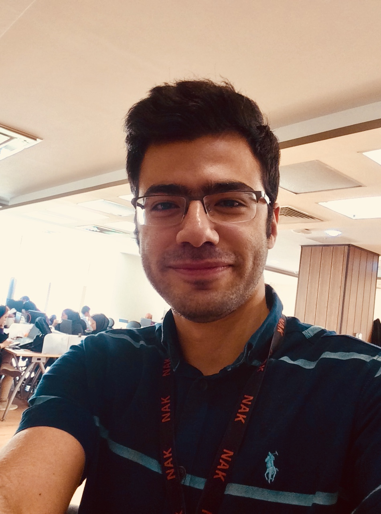

This space is a personal website. You can find all the information about me including work experience in Information technology here. In short, my name is Soroush. I am from Iran and I live in Tehran.I received my bachelor's degree from the Azad University of Tehran in the field of information technology engineering. I worked for the IT team for four years and six months in a company called Naghshe Aval Keyfiyat, a subsidiary of Hamrah Aval (the largest telecommunications company in the Middle East). Before that, I did various things. For example, I worked for a while as an intern in Baharan Company as a Computer Assembler. After that, I worked as a writer for a while on the Zomit site, which is known as the largest site in the field of information technology news in Iran.All my information is available on this website.If you need more information, please contact me
